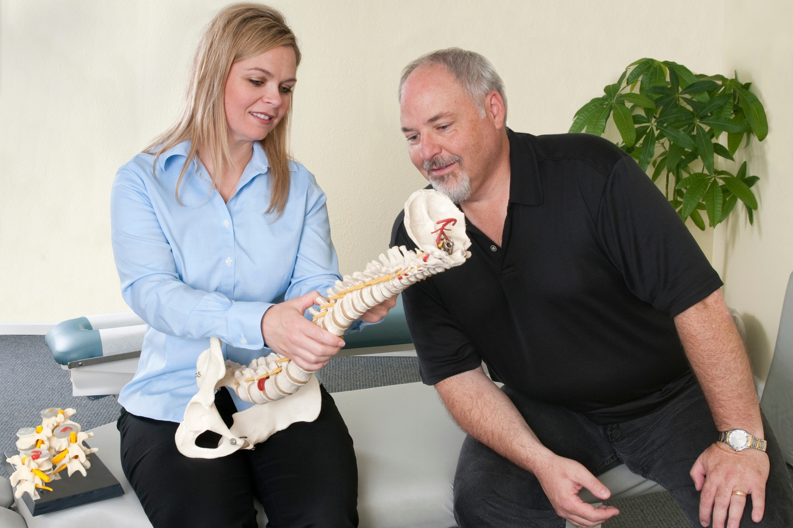
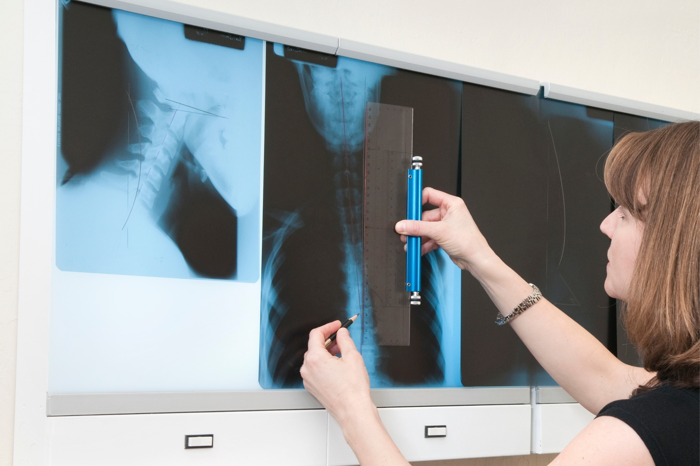
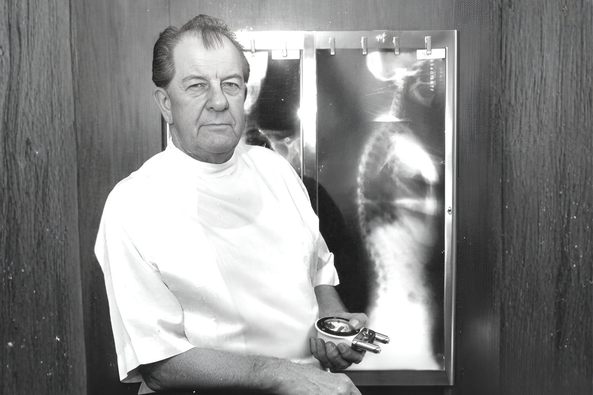

Founder Of The Gonstead Technique
Dr. Clarence Gonstead, and the thinking behind the system.
Learn moreHow we work
The Gonstead Technique relies on five essential components. When they align, we can provide a specific and effective adjustment.

🔍 Five components, one adjustment
🎯 Specificity is the key
📍 Serving Ocala area
The short answer
The Gonstead Technique relies on five essential components: Visualization, Instrumentation, Palpation, X-Ray, and patient symptoms. By integrating these elements, we can pinpoint the precise location that requires adjustment. When all these factors align, we can provide the patient with a specific and effective adjustment.
Why settle for anything less than comprehensive information when making crucial decisions about someone's health? Every patient deserves the highest level of chiropractic care in Ocala, FL, achieved through a thorough analysis that correlates various aspects of their clinical picture. This approach ensures specificity and fosters patient confidence in the doctor's ability to provide effective care.
Specificity is the key, as Dr. Gonstead emphasized that three adjustments on the wrong vertebral segment could lead to a Subluxation, highlighting the importance of precision.

In the Gonstead System, Full Spine X-Rays are crucial, capturing both A-P and Lateral views. These films measure 14" x 36" and include the area from ischia to occiput. Full Spine X-Rays use less radiation compared to sectional films and offer numerous advantages. They provide an accurate count of vertebrae, offer a comprehensive view of spinal contour for posture analysis with axial weight bearing, and reveal issues beyond the chief complaint. These factors make Full Spine X-Rays indispensable in Gonstead Chiropractic, allowing us to fully analyze and correct a patient's condition.
Gonstead Chiropractic employs both Static and Motion Palpation techniques to precisely identify areas of concern. Static Palpation is a hands-on examination that detects changes in contour, tone, texture, and temperature on the patient. Motion Palpation, on the other hand, is used to identify subluxations and their listings.

The use of a dual probe instrument, such as the Nervoscope or Delta-T, plays a pivotal role in the Gonstead Technique. It allows for a bilateral temperature comparison of the spine, helping to locate areas of inflammation. The readings obtained through instrumentation indicate the presence of subluxations, their correction progress, and when correction has been achieved.
Visualization begins the moment a patient enters the clinic in the Gonstead System. We carefully observe the patient, taking note of differences in ear, shoulder, and hip heights, posture, and gait. This visual assessment complements the information gathered through X-Rays and Palpation, aiding in the diagnostic process.
Although not applied in a rigid "cook-book" manner, understanding a patient's health issues helps us determine the specific area that requires adjustment. Symptoms can also assist in differentiating between the two parts of the Autonomic Nervous System (Sympathetic and Parasympathetic) and guide us in delivering precise adjustments.
In the Gonstead System, we synthesize information from these various analysis modes and correlate our findings to identify the likely cause of the patient's problem. Once Subluxations are pinpointed, we apply the appropriate Gonstead technique to effectively correct the problem areas. The Gonstead system places a strong emphasis on the dynamics of intervertebral discs as the root cause of subluxations and resulting neurological dysfunction. Therefore, Gonstead doctors are often referred to as "disc doctors," focusing on addressing these underlying issues for the benefit of their patients' overall health and well-being.
Dr. Gonstead proposed that vertebral misalignment disrupts the Parallel Disc alignment, leading to compression at the nucleus pulposus. This compression forces the nucleus to exert pressure on the surrounding annular fibers, causing damage to them.
Such damage triggers an inflammatory response, which causes the disc to swell. This swelling then exerts pressure on the nerves located in the respective intervertebral foramen, leading to neurological dysfunction.
According to the Gonstead methodology, understanding that subluxations originate from the disc is crucial. Recognizing the stages of disc degeneration is essential for determining the appropriate adjustment direction and force needed for effective correction.
Within the spinal column, the intervertebral discs serve a dual purpose: they act as a protective buffer to enhance flexibility and as a structural link that maintains proper motion between the vertebral bodies.
The Nucleus Pulposus, a dense central core, retains fluids and nutrients and acts as a pivot during vertebral movement, much like a "ball bearing." The Annulus Fibrosis, composed of fibrocartilage and collagen fibers, surrounds this core. It is similar to the concentric rings seen in a tree trunk cross-section, and it is anchored to the cartilaginous end plates of the adjacent vertebral bodies.
Dr. Gonstead's Level Disc Theory asserts that "anatomically and physiologically normal discs promote optimum vertebral alignment." This is evidenced when the vertical height of a vertebral couple is uniform around 360 degrees, with the vertebral bodies properly aligned. This alignment, known as "Parallel Discs," ensures even weight distribution, adequate nutrient flow, and optimal joint function and movement within the spine.
Full Spine X-Rays use less radiation compared to sectional films, give an accurate count of vertebrae, show spinal contour for posture analysis with axial weight bearing, and reveal issues beyond the chief complaint.
A dual probe instrument such as the Nervoscope or Delta-T. It allows for a bilateral temperature comparison of the spine, helping to locate areas of inflammation.
Dr. Gonstead emphasized that three adjustments on the wrong vertebral segment could lead to a Subluxation. Finding the precise location is the point of the five component analysis.
The Gonstead system places a strong emphasis on the dynamics of intervertebral discs as the root cause of subluxations and resulting neurological dysfunction.